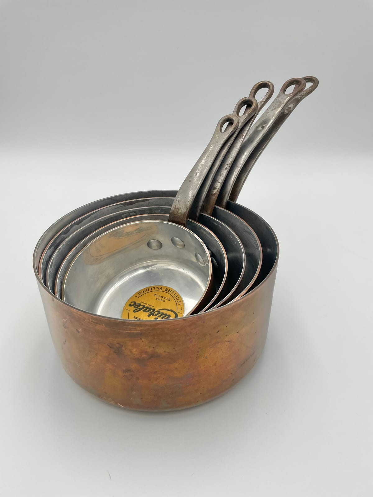
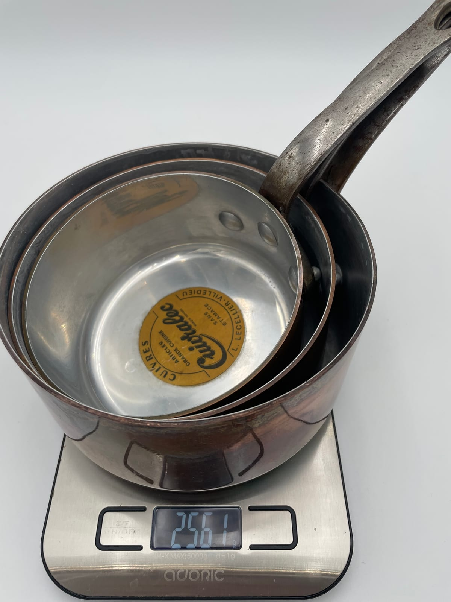
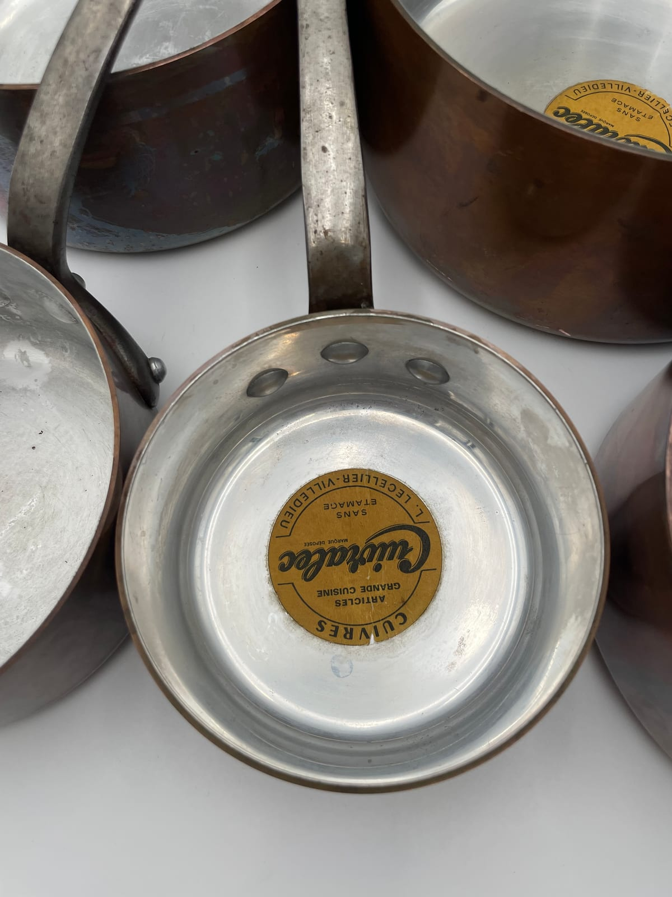
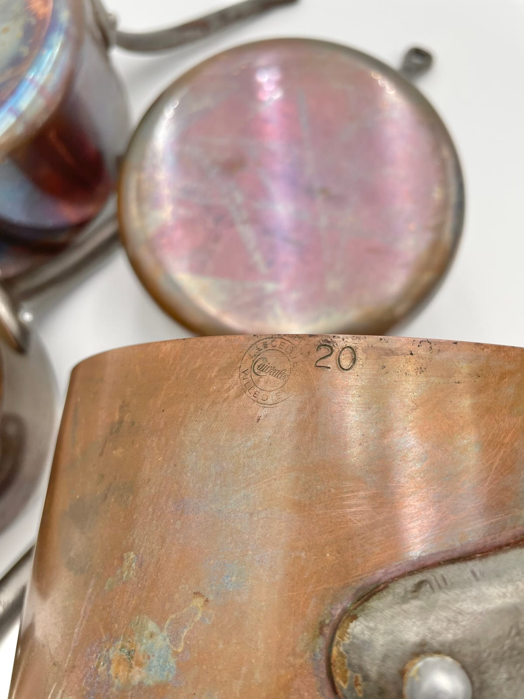
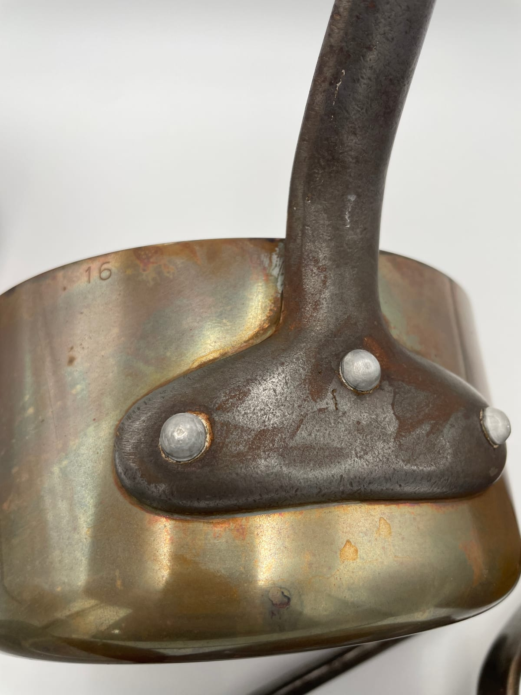
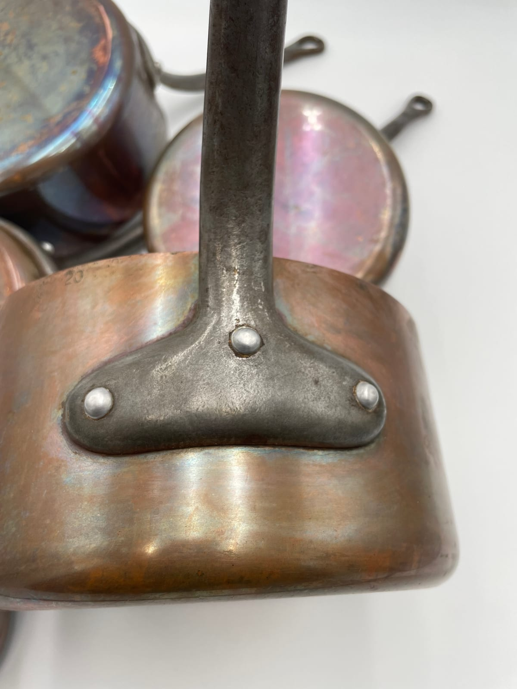
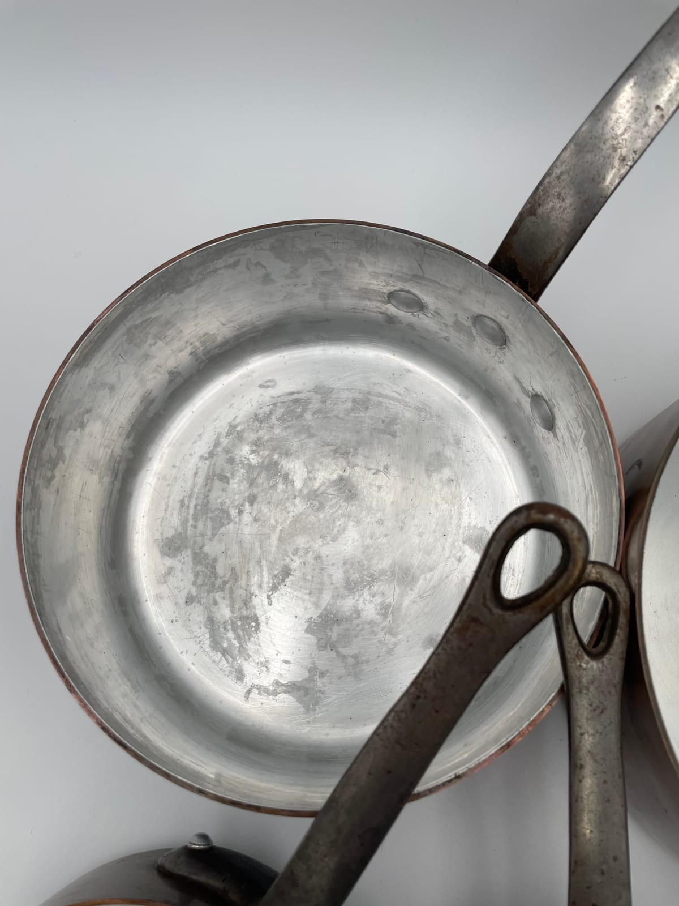
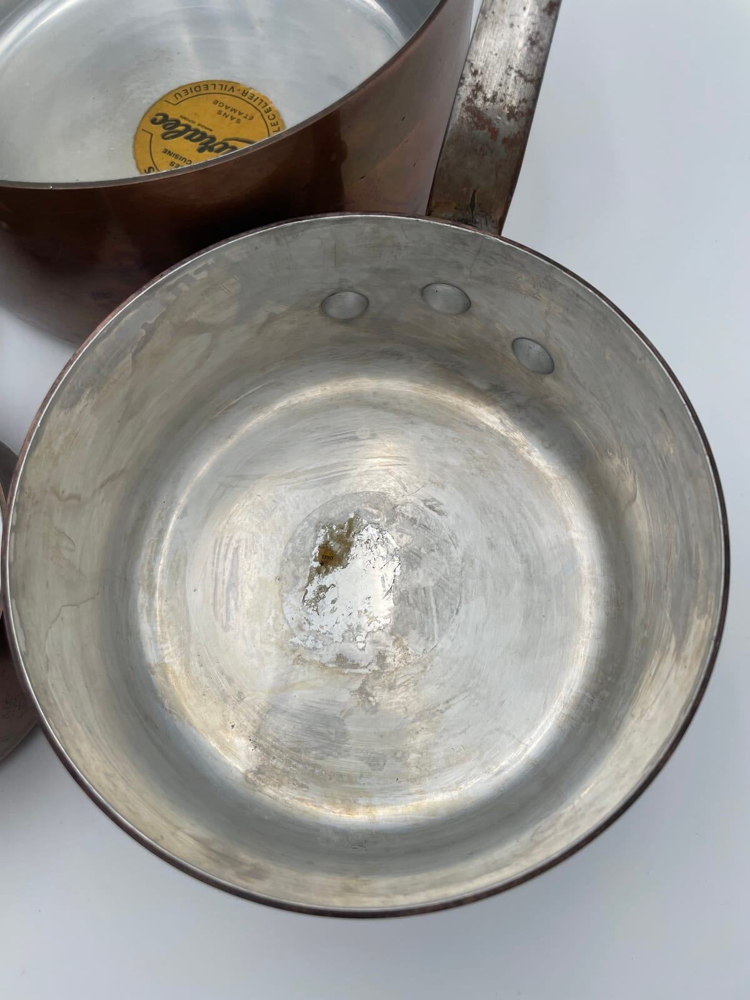

Série graduée de cinq casseroles en cuivre L. Lecellier « Cuivralec », 12 à 20 cm, Villedieu-les-Poêles, France
550€
Aucun paiement en ligne : nous vous répondons personnellement pour confirmer la disponibilité, la livraison et le paiement.
Une série graduée de cinq casseroles en cuivre de L. Lecellier à Villedieu-les-Poêles, la ville normande dont le nom est synonyme de dinanderie depuis des siècles, vendues sous la marque déposée « Cuivralec ». Les tailles progressent régulièrement de 12 à 20 cm, en cuivre d'environ 1,5 mm, chacune munie d'une queue en fer fixée par trois rivets — une progression pensée pour le fourneau plutôt que pour la vitrine. Ce qui distingue cette série, c'est la survivance de ses étiquettes papier d'origine, encore en place dans la plus grande et la plus petite casserole — toutes deux jamais utilisées, qui disent comment les pièces étaient vendues : « articles grande cuisine », et explicitement « sans étamage ». Ces étiquettes sont d'ordinaire les premières à disparaître ; elles conservent ici la description du fabricant sur les objets eux-mêmes.
- Fabricant
- L. Lecellier (Cuivralec)
- Origine
- Villedieu-les-Poêles, Normandie, France
- Matériaux
- Cuivre (env. 1,5 mm), intérieur non étamé selon les étiquettes d'origine, queues en fer fixées par trois rivets
- Dimensions
- Cinq casseroles, diamètres 12, 14, 16, 18 et 20 cm. Poids : les deux plus grandes ensemble 2,956 kg ; les trois plus petites ensemble 2,561 kg (5,517 kg pour la série)
- Marques & signatures
- Poinçon rond « L. LECELLIER / Cuivralec / VILLEDIEU » à côté de la taille « 20 » sur la plus grande casserole ; tailles frappées sur les autres. La plus grande (20 cm) et la plus petite (12 cm) conservent à l'intérieur leur étiquette papier d'origine : « Cuivres · Articles Grande Cuisine · Cuivralec · Marque Déposée · Sans Étamage · L. Lecellier – Villedieu »
- État
- Bon état vintage. Les casseroles de 12 et 20 cm n'ont jamais servi et conservent leur étiquette d'origine. Les trois autres présentent des traces d'usage, avec des zones ternes et des marques sur les fonds intérieurs. Extérieurs à la patine naturelle du cuivre, avec irisations de chauffe et légères marques ; queues en fer présentant une oxydation de surface ; rivets sains (voir photos).